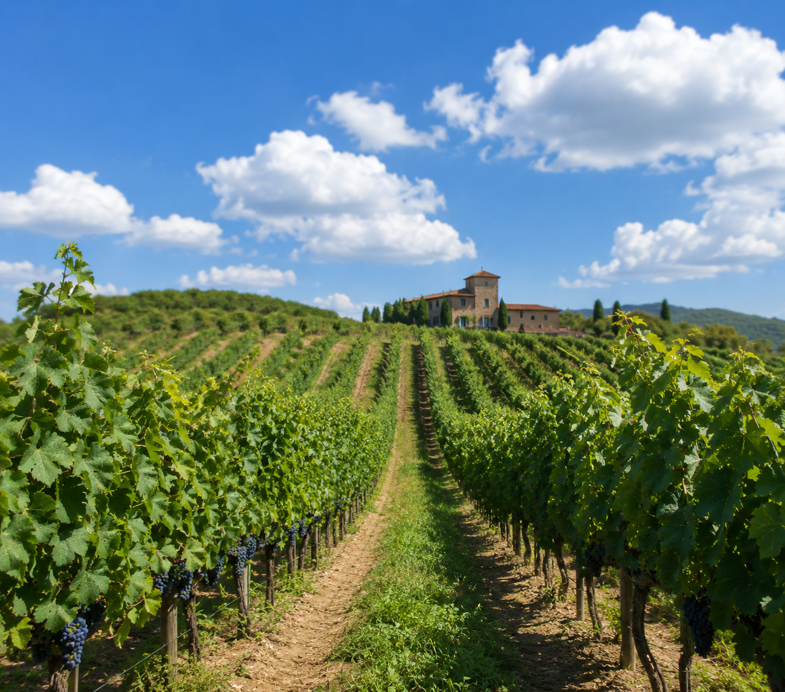
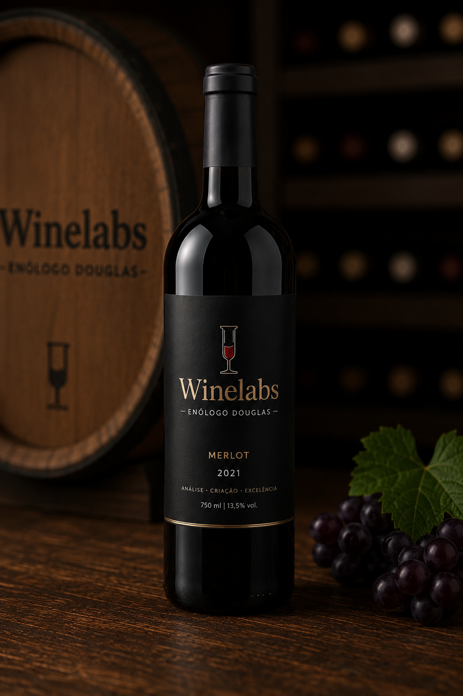
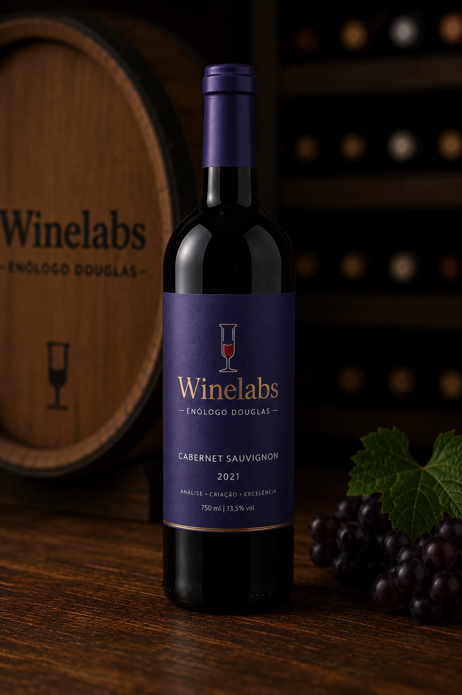
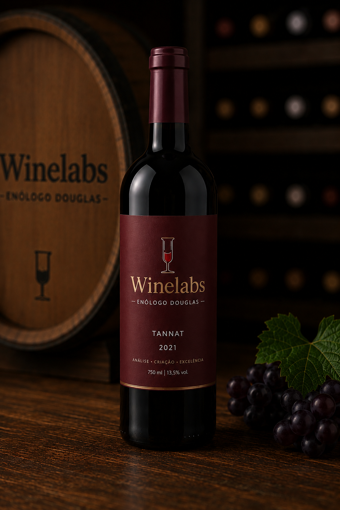
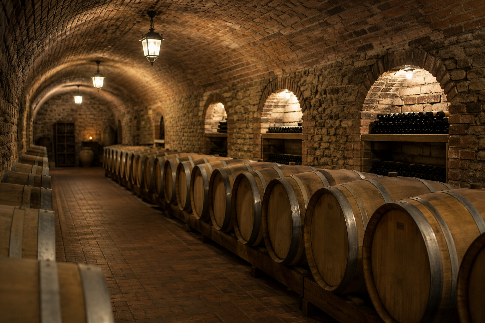

Acessibilidade e inovação ao mundo do vinho.
Sou Douglas — enólogo, designer e consultor com mais de 15 anos de experiência no setor de bebidas. A Winelabs nasceu da convicção de que todo vinho, por menor que seja a vinícola, merece uma identidade visual memorável e uma estratégia comercial clara.
Aqui, unimos consultoria técnica em enologia, design de marca e estratégia de posicionamento — tudo isso focado em acessibilidade e inovação. Trabalho com produtores que querem evoluir com método, dados e identidade própria, do diagnóstico inicial até a criação ou repaginação completa de produtos.

O que me move
Sou apaixonado por enologia desde criança — cresci entre vinhedos em São Roque. Percebo todos os dias que o mundo do vinho é complexo, mas a maioria dos produtores não tem acesso a ferramentas profissionais para comunicar sua qualidade.
Isso me move: traduzir o vinho para diferentes públicos sem perder qualidade. Um bom rótulo, uma identidade clara e uma estratégia comercial bem definida são o caminho para construir portfólio, captar clientes e fortalecer marcas — isso é inovação e acessibilidade juntas.
Para quem atuamos



Pequenos produtores de vinho — que precisam de identidade visual e estratégia de marca.
Lojas de bebidas, físicas e digitais — que querem posicionar seus rótulos de forma profissional.
Restaurantes e negócios enogastronômicos — que buscam elevar a experiência e comunicação de suas seleções.
Onde atuamos
Baseado em São Roque — SP, coração da vitivinicultura paulista —, atendo clientes em toda São Paulo e Brasil afora. Minha proximidade com o terroir local não é só inspiração: é a base técnica que reforça minha visão comercial e consultiva sobre vinhos, sucos e bebidas artesanais.
Prefiro trabalhos de médio a longo prazo, onde posso acompanhar o crescimento da marca do início ao final — isso garante consistência e resultados reais.
